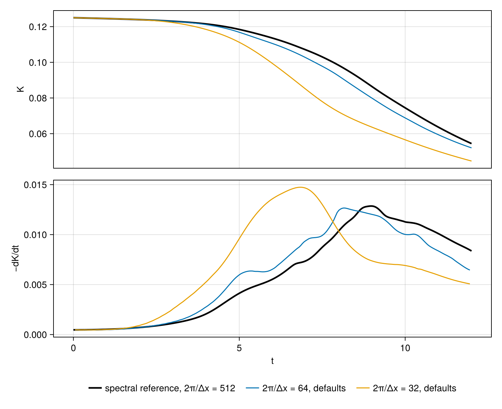
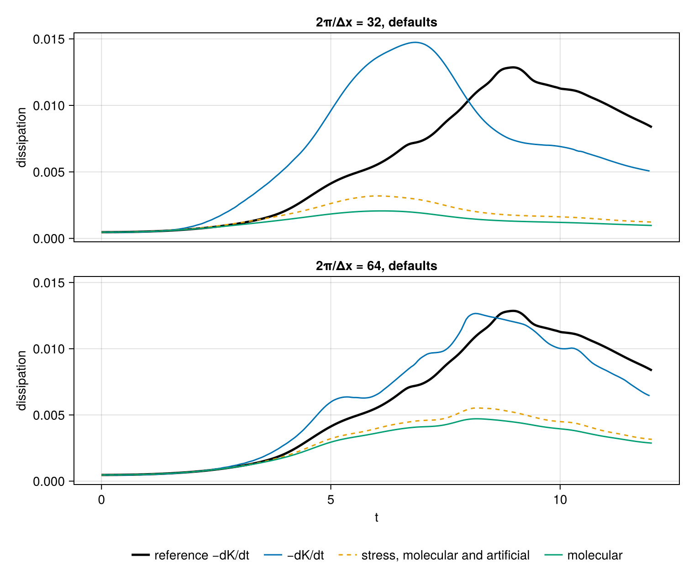
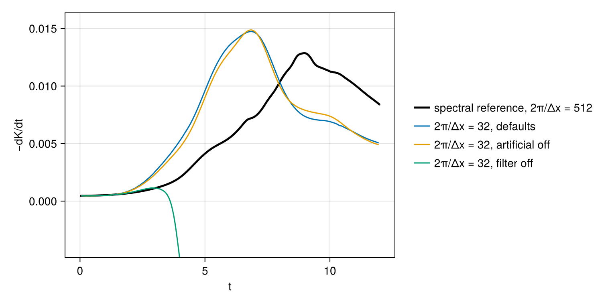
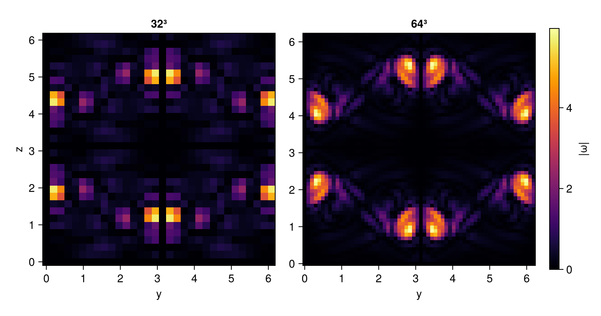

Taylor–Green vortex: complete script
This page shows the whole script of Taylor–Green vortex, including the code that reduces the runs to the figures and the numbers quoted, which that page leaves out.
The Taylor–Green vortex is a periodic array of vortices that starts as a single Fourier mode and breaks down into turbulence. At a Reynolds number of 1600 the rate at which its kinetic energy decays rises to a maximum near $t = 9$ and then falls as the turbulence decays. The case is a standard test of large-eddy simulation: the velocity gradients that carry the peak dissipation are too fine for a spacing $\Delta x$ of a 32nd or a 64th of the period, $2\pi/\Delta x = 32$ or 64. The questions are how close the energy history comes to a resolved calculation on such a grid, and what removes the energy that the grid cannot dissipate through the molecular viscosity.
The reference is a pseudo-spectral calculation of the incompressible flow at $2\pi/\Delta x = 512$, distributed with the International Workshops on High-Order CFD Methods as spectral_Re1600_512.gdiag and carried in the package's data directory. Its columns are the time, the kinetic energy per unit volume, its rate of decay $-dK/dt$ and the enstrophy, every 0.01 from $t = 0$ to 19.99. This page calculates the vortex at Mach 0.1 at $2\pi/\Delta x = 32$ and 64, compares the energy and its rate of decay with the reference, and divides the decay among the molecular viscosity, the artificial properties and the compact filter.
The script takes its settings from the command line: N, the nodes per side, which sets the spacing $\Delta x = 2\pi/N$ of the main run and of a second run at twice that spacing; and tfinal, the time at which the runs end. The figures were computed on eight MPI ranks of one thread each. A third setting, smoke=true, gives the runs 24³ and 12³ nodes and ends them at $t = 0.1$, which checks that the page still runs; the figures come from the full run.
using CompactLES # re-exports MPI
MPI.Initialized() || MPI.Init(threadlevel=:funneled)
using CairoMakie
using Printf
CairoMakie.activate!(type = "png")
opt = CompactLES.script_args(ARGS, (N = 64, tfinal = 12.0, smoke = false);
positional = (:N, :tfinal))
N = opt.N
tfinal = opt.tfinal
opt.smoke && ((N, tfinal) = (24, 0.1))Flow
The box is $[0, 2\pi]^3$ and periodic in every direction. The velocity starts as
\[u = V_0 \sin x \cos y \cos z, \qquad v = -V_0 \cos x \sin y \cos z, \qquad w = 0,\]
with $V_0 = 1$ and a uniform density $\rho_0 = 1$, and the pressure is the one that balances this velocity field in incompressible flow,
\[p = p_0 + \frac{\rho_0 V_0^2}{16} \left(\cos 2x + \cos 2y\right)\left(\cos 2z + 2\right).\]
The gas is ideal with $\gamma = 1.4$, and $p_0$ sets the sound speed to 10, a Mach number of 0.1 on the largest velocity, so that the flow is nearly incompressible. The viscosity is constant at $\mu = \rho_0 V_0 / 1600$, for a Reynolds number of 1600 on the unit length. At $t = 0$ the kinetic energy per unit volume is 1/8.
reynolds = 1600.0
gamma_gas = 1.4
p0 = 10.0^2 / gamma_gas
problem = Problem(
name = "Taylor–Green vortex",
eos = IdealSpecies("gas"; R = 1.0, gamma = gamma_gas),
transport = ConstantTransport(mu0 = 1 / reynolds),
domain = ((0.0, 2pi), (0.0, 2pi), (0.0, 2pi)),
bcs = (PeriodicBC(), PeriodicBC(), PeriodicBC()),
ic = (x, y, z) -> Prim(
u = (sin(x) * cos(y) * cos(z), -cos(x) * sin(y) * cos(z), 0.0),
p = p0 + (cos(2x) + cos(2y)) * (cos(2z) + 2) / 16,
rho = 1.0),
)
path = joinpath(pkgdir(CompactLES), "data", "spectral_Re1600_512.gdiag")
rows = [parse.(Float64, split(l)) for l in eachline(path) if !startswith(l, '#')]
reference = (t = getindex.(rows, 1), K = getindex.(rows, 2), rate = getindex.(rows, 3))
peak_rate, k = findmax(reference.rate)
@printf("reference: K = %.4f at t = 0, peak -dK/dt = %.4e at t = %.2f\n",
reference.K[1], peak_rate, reference.t[k])Energy budget
For a periodic box the kinetic energy $K = \langle \rho |\mathbf u|^2 / 2 \rangle$, averaged over the volume, changes by
\[-\frac{dK}{dt} = \langle \tau_{ij} \, \partial_j u_i \rangle - \langle p \, \nabla\cdot\mathbf u \rangle + F,\]
where $\tau$ is the viscous stress, the second term is the reversible exchange with the internal energy through compression, and $F$ is what the compact filter removes between steps together with any error of the discretization. The stress is built from the molecular viscosity and the artificial shear and bulk viscosities $\mu^*$ and $\beta^*$. dissipation_rate returns the first term with all three. Its molecular part is $\mu (\langle \omega^2 \rangle + \tfrac43 \langle (\nabla\cdot\mathbf u)^2 \rangle)$, with $\omega$ the vorticity, by an identity that holds for the discrete periodic derivative as well: the run with the artificial properties disabled, below, gives the two equal to within 1e-13 of the molecular part. For the incompressible reference the molecular dissipation is $\mu \langle\omega^2\rangle$, which is all of $-dK/dt$.
Every 0.05 time units each run records $K$, the stress dissipation, its molecular part and the pressure work, and $-dK/dt$ is the centered difference of $K$ over two of these intervals. The mean density is 1 at every time, so the averages per unit volume and per unit mass are the same. At $t = 8$ the run keeps the vorticity magnitude on the plane $x = \pi$. A configuration that loses positivity ends with a SolverFailure, which the run records.
function simulate(N; label, nmax = typemax(Int), kw...)
solver, Q = setup(problem, Numerics(n_global = (N, N, N); kw...))
volume = (2pi)^3
mean(f) = volume_integral(solver, f) / volume
t, K, total, molecular, pdil = (Float64[] for _ in 1:5)
record = Callback(EveryTime(0.05), function (solver, Q)
rho, u, v, w, p, omega, theta = (field_array(solver, Q, name) for name in
(:rho, :u, :v, :w, :p, :vorticity_magnitude, :divergence))
push!(t, solver.t)
push!(K, mean(@. rho * (u^2 + v^2 + w^2) / 2))
push!(total, dissipation_rate(solver, Q))
push!(molecular, mean(@. omega^2 + 4theta^2 / 3) / reynolds)
push!(pdil, mean(p .* theta))
nothing
end)
frame = Ref{Any}(nothing)
t_frame = min(8.0, tfinal)
keep = Callback(AtTime(t_frame), function (solver, Q)
frame[] = field_slice(solver, Q, :vorticity_magnitude; normal = 1,
index = N ÷ 2 + 1)
nothing
end)
failure = nothing
try
run!(solver, Q; tfinal, nmax, callback = (record, keep))
catch err
err isa SolverFailure || rethrow()
failure = err
end
if MPI.Comm_rank(MPI.COMM_WORLD) == 0
@printf("%-28s %d steps to t = %.2f\n", label, solver.step, solver.t)
failure === nothing || println(" ", sprint(showerror, failure))
end
rate = [(K[i-1] - K[i+1]) / (t[i+1] - t[i-1]) for i in 2:length(t)-1]
return (; N, label, t, K, total, molecular, pdil, rate, tc = t[2:end-1],
frame = frame[], t_frame, failure)
endRuns
Two runs take the default numerics: the sixth-order compact derivative, the eighth-order compact filter with $\alpha_f = 0.47$ applied after every step, the artificial properties with their default coefficients, and a step at a Courant number of 0.5. Two more runs on the coarser grid each change one of these defaults: one disables the artificial properties, and one disables the filter.
runs = mpi_main() do
[simulate(N; label = "2π/Δx = $N, defaults"),
simulate(N ÷ 2; label = "2π/Δx = $(N ÷ 2), defaults"),
simulate(N ÷ 2; label = "2π/Δx = $(N ÷ 2), artificial off",
art = ArtificialProperties(enabled = false)),
simulate(N ÷ 2; label = "2π/Δx = $(N ÷ 2), filter off", filter = nothing,
nmax = 3000)]
end
fine, coarse, no_art, no_filter = runsThe analysis and the figures below run on rank 0; the other ranks stop here.
MPI.Comm_rank(MPI.COMM_WORLD) == 0 || exit()Decay
The kinetic energy and its rate of decay on both grids, with the defaults, against the reference:
reference_K(t) = reference.K[clamp(round(Int, 100t) + 1, 1, length(reference.K))]
for r in (fine, coarse)
isempty(r.rate) && continue
peak, i = findmax(r.rate)
@printf("%-20s peak -dK/dt %.4e at t = %.2f (%+.1f%% against the reference \
peak); K at t = %g: %.4f against %.4f\n", r.label, peak, r.tc[i],
100 * (peak / peak_rate - 1), r.t[end], r.K[end], reference_K(r.t[end]))
end
colors = Makie.wong_colors()
fig = Figure(size = (760, 620))
ax1 = Axis(fig[1, 1], ylabel = "K")
ax2 = Axis(fig[2, 1], xlabel = "t", ylabel = "−dK/dt")
linkxaxes!(ax1, ax2)
hidexdecorations!(ax1, grid = false)
for ax in (ax1, ax2)
window = reference.t .<= tfinal
y = ax === ax1 ? reference.K : reference.rate
lines!(ax, reference.t[window], y[window], color = :black, linewidth = 2.5,
label = "spectral reference, 2π/Δx = 512")
for (n, r) in enumerate((fine, coarse))
lines!(ax, ax === ax1 ? r.t : r.tc, ax === ax1 ? r.K : r.rate,
color = colors[n], label = "2π/Δx = $(r.N), defaults")
end
end
Legend(fig[3, 1], ax2, orientation = :horizontal, framevisible = false)
The reference decays at its largest rate, 1.29e-2, at $t = 8.97$. At $2\pi/\Delta x = 64$ the rate departs from the reference near $t = 3$, exceeds it by up to 44% between $t = 4$ and 6, and reaches its maximum of 1.27e-2 at $t = 8.15$, 1.5% below the reference maximum and 0.8 earlier. After $t = 9.5$ it lies 6% to 23% below the reference. The maximum therefore agrees because an early rise and an early fall bracket it, not because the history follows the reference. The energy falls 8% below the reference near $t = 9.5$ and ends 4% below at $t = 12$.
At $2\pi/\Delta x = 32$ the rate is already 2.3 times the reference at $t = 3$. It peaks at 1.47e-2 at $t = 6.85$, 15% above the reference maximum and 2.1 earlier, and then falls to 0.6 of the reference. The energy is 27% below the reference near $t = 8.5$. Halving the spacing moves the peak toward the reference in both time and value.
Where the energy goes
The terms of the budget at the peak of each run, as percentages of its $-dK/dt$ there, are
| run | $t$ | molecular | artificial | pressure work | filter and error |
|---|---|---|---|---|---|
| $2\pi/\Delta x = 64$ | 8.15 | 37.2 | 6.4 | 0.1 | 56.3 |
| $2\pi/\Delta x = 32$ | 6.85 | 13.2 | 6.8 | 0.2 | 79.7 |
| $2\pi/\Delta x = 32$, artificial off | 6.85 | 14.2 | 0.0 | 0.2 | 85.5 |
and the terms against time are
function shares(r, i)
rate = r.rate[i]
molecular, artificial = r.molecular[i+1], r.total[i+1] - r.molecular[i+1]
filtered = rate - r.total[i+1] + r.pdil[i+1]
return (; t = r.tc[i], molecular = molecular / rate, artificial = artificial / rate,
pressure = -r.pdil[i+1] / rate, filtered = filtered / rate)
end
for r in (fine, coarse, no_art)
isempty(r.rate) && continue
s = shares(r, argmax(r.rate))
@printf("%-26s t = %.2f: molecular %5.1f%%, artificial %5.1f%%, pressure work \
%5.1f%%, filter and error %5.1f%%\n", r.label, s.t, 100s.molecular,
100s.artificial, 100s.pressure, 100s.filtered)
end
gap = maximum(abs.(no_art.total .- no_art.molecular) ./ no_art.molecular)
@printf("artificial off: stress dissipation and molecular part differ by at most \
%.1e of the latter\n", gap)
fig = Figure(size = (760, 640))
axes = [Axis(fig[n, 1], ylabel = "dissipation", title = "2π/Δx = $(r.N), defaults")
for (n, r) in enumerate((coarse, fine))]
linkaxes!(axes...)
hidexdecorations!(axes[1], grid = false)
axes[end].xlabel = "t"
for (ax, r) in zip(axes, (coarse, fine))
window = reference.t .<= tfinal
lines!(ax, reference.t[window], reference.rate[window], color = :black,
linewidth = 2.5, label = "reference −dK/dt")
lines!(ax, r.tc, r.rate, color = colors[1], label = "−dK/dt")
lines!(ax, r.t, r.total, color = colors[2], linestyle = :dash,
label = "stress, molecular and artificial")
lines!(ax, r.t, r.molecular, color = colors[3], label = "molecular")
end
Legend(fig[3, 1], axes[end], orientation = :horizontal, framevisible = false)
The molecular dissipation of both runs follows the reference until about $t = 3$, when it is 0.98 of the reference rate at $2\pi/\Delta x = 64$ and 0.90 at 32, and falls behind it from then on. At the peak of the run at $2\pi/\Delta x = 64$ the molecular viscosity carries 37% of the decay, the artificial properties 6% and the pressure work 0.1%, which leaves 56% to the filter. At $2\pi/\Delta x = 32$ the shares are 13%, 7% and 0.2%, and the filter's 80%. The molecular dissipation of the run at $2\pi/\Delta x = 64$ never exceeds 4.7e-3, 37% of the reference maximum, so this grid holds at most 37% of the peak enstrophy of the resolved flow.
The peak at $2\pi/\Delta x = 32$ was measured a second time with the filter's own loss taken directly, by advancing a copy of the state one step and filtering it: the filter removes 79% of the decay there, and the terms then account for the measured $-dK/dt$ to 0.3%. The remainder $F$ is therefore the filter's work, with the error of the discretization under one percent of the decay.
Defaults
The coarse grid with each of the two changes against the defaults:
for r in (no_art, no_filter)
if r.failure === nothing
peak, i = findmax(r.rate)
@printf("%-26s peak -dK/dt %.4e at t = %.2f\n", r.label, peak, r.tc[i])
else
@printf("%-26s stopped at t = %.2f: %s\n", r.label, r.failure.t,
r.failure.reason)
end
end
fig = Figure(size = (760, 380))
ax = Axis(fig[1, 1], xlabel = "t", ylabel = "−dK/dt")
window = reference.t .<= tfinal
lines!(ax, reference.t[window], reference.rate[window], color = :black,
linewidth = 2.5, label = "spectral reference, 2π/Δx = 512")
for (n, r) in enumerate((coarse, no_art, no_filter))
lines!(ax, r.tc, r.rate, color = colors[n], label = r.label)
end
top = 1.1 * maximum(maximum(r.rate; init = peak_rate) for r in (coarse, no_art))
ylims!(ax, -0.3top, top)
Legend(fig[1, 2], ax, framevisible = false)
Without the artificial properties the run at $2\pi/\Delta x = 32$ peaks at the same time and 0.9% higher, and its energy stays closer to the reference, 25% below it at most rather than 27%. At its peak the filter's share rises from 80% to 86%, taking over the share of the artificial shear viscosity. The artificial bulk viscosity has almost no dilatation to act on at Mach 0.1: its dissipation at the peak of that run is 2e-4 of the decay. The artificial properties are not what produce this result.
Without the filter the run follows the reference rate more closely than the filtered run up to $t = 3$, 0.98 of it against 2.3 times it. The energy then turns upward before $t = 4$ and triples by $t = 5$, and the run stops at $t = 5.26$ with a negative density. The flow is not forced, so the rise in energy is numerical. On these grids the filter both keeps the calculation stable and sets the rate of decay at the peak.
Vorticity
The vorticity magnitude on the plane $x = \pi$ at $t = 8$, on both grids, on a common color scale:
fig = Figure(size = (760, 400))
frames = [r.frame for r in (coarse, fine)]
top = maximum(maximum(f[3]) for f in frames)
for (n, (r, f)) in enumerate(zip((coarse, fine), frames))
panel = Axis(fig[1, n], aspect = DataAspect(), title = "2π/Δx = $(r.N)", xlabel = "y",
ylabel = n == 1 ? "z" : "")
heatmap!(panel, f[1], f[2], f[3], colormap = :inferno, colorrange = (0, top))
end
Colorbar(fig[1, 3], limits = (0, top), colormap = :inferno, label = "|ω|")
The two grids place the strongest vorticity in the same pairs of sheets. At $2\pi/\Delta x = 64$ each sheet spans several nodes and weaker streaks a node or two wide lie between the sheets. At $2\pi/\Delta x = 32$ each sheet is one or two nodes across, and the field between the sheets varies from node to node.
What this checks
- At $2\pi/\Delta x = 64$ with the default numerics the peak rate of decay of the kinetic energy is within 1.5% of the spectral reference at $2\pi/\Delta x = 512$, but it occurs 0.8 time units early, the rate is up to 44% high before it and up to 23% low after it, and the energy is up to 8% low.
- At $2\pi/\Delta x = 32$ the peak is 15% high and 2.1 time units early, and the energy is up to 27% low.
- The molecular dissipation follows the reference until $t = 3$ on both grids and reaches 37% of the reference maximum at $2\pi/\Delta x = 64$. At the peak the compact filter removes 56% of the decay at $2\pi/\Delta x = 64$ and 80% at 32, and the artificial properties 6% to 7%.
- Disabling the artificial properties changes the peak at $2\pi/\Delta x = 32$ by 0.9%. Disabling the filter makes the energy grow from before $t = 4$ until the density turns negative at $t = 5.26$.
The figures on this page were computed at commit 671fb0f on 2026-10-06, in 11 min, by mpiexec -n 8 julia --project=docs -t 1 examples/taylor_green.jl.
This page was generated using Literate.jl.